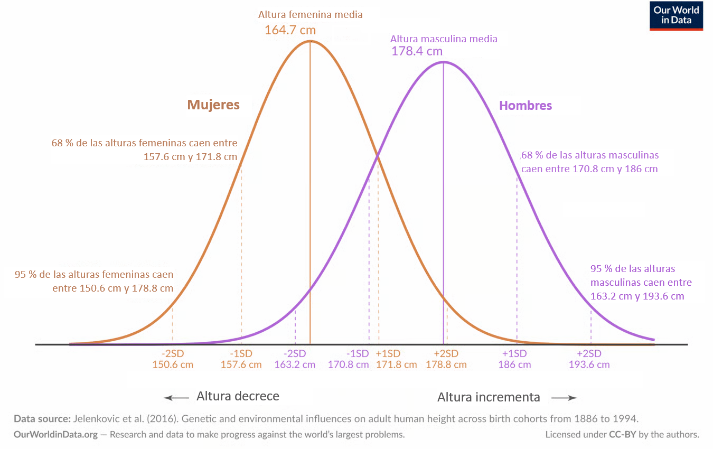
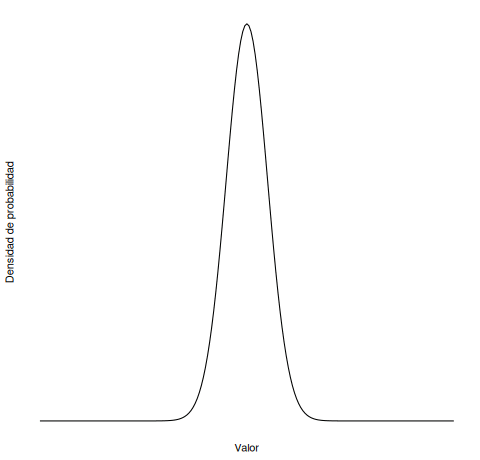
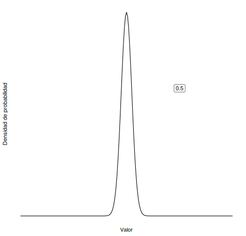
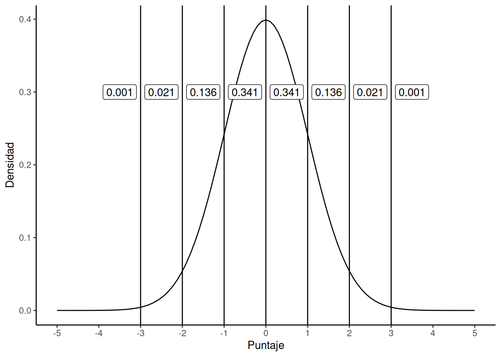
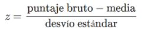
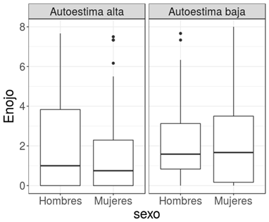

Práctico: Distribución normal, muestreo y puntuaciones Z (S09)
9.1 Distribución normal, muestreo y puntuaciones Z
Lectura asociada
Capítulo 5
Apartado 5.5 La distribución normal (incluye 5.5.1 Distribución de probabilidad)
Apartado 5.8 Muestras, poblaciones y muestreo (hasta 5.8.1 Definir una población)
Apartado 5.8.5 Parámetros poblacionales y estadísticas muestrales
Contenidos
Distribución normal
Población y muestra
Parámetros poblacionales y estadísticos muestrales
Puntuaciones Z
9.2 Juegos con dados
Imagina que tiras un dado. ¿Cuál es la probabilidad de que salga cada una de las seis caras del dado? ¿Tienen todas las caras la misma posibilidad de salir? Entonces ¿cómo lo graficarías?
Puedes simular esto en Demo dados (click). Configura la opción Number of dice: 1 y “Roll automatically”.
Espera a que el gráfico se estabilice y observa la distribución.
Ahora imagina que tiramos dos dados a la misma vez y nos interesa registrar la suma de los puntos de ambos dados en cada intento. ¿Son igualmente probables todos los resultados?
Puedes simular esto en Demo dados (click). Configura la opción Number of dice: 2 y “Roll automatically”.
Espera a que el gráfico se estabilice y observa la distribución.
Revisa tu respuesta a ¿Son igualmente probables todos los valores?
9.3 Tablero de Galton
Veamos otro caso específico en la siguiente animación: Tablero de Galton (click)
Explora la animación en el botón Intro. Al tirar una canica, ¿en qué tubo es más probable que caiga?
Realiza varios intentos usando la opción xTodo
Ahora explora la opción Laboratorio. Mantiene las especificaciones por defecto (Filas 12 y Probabilidad 0.5). Luego cambia la opción a Camino.
¿Tiene una canica la misma probabilidad de caer en cada tubo? Luego de que el gráfico se estabiliza, observa la distribución.
Imagina que pudieras prolongar la caída de canicas infinitamente. ¿Cómo sería la distribución?
¿A qué refiere la opción de ajuste Probabilidad = 0.5? ¿Qué sucede con la distribución si cambias la Probabilidad a 0.7? ¿Y si la cambias a 0.2?
9.4 La distribución de las alturas de los adultos
Vamos a graficar a mano la distribución de las alturas de todas las personas adultas y de de sexo femenino de Uruguay. En otras palabras, queremos representar visualmente la probabilidad de observar las distintas alturas posibles en nuestra población.
Ahora realiza el mismo gráfico para los adultos de sexo masculino de Uruguay.
¿Cómo se vería cada representación?
Desplegar luego de responder
La altura humana está afectada por una serie de factores genéticos y ambientales que dan lugar a su variabilidad en la población. No obstante, al igual que otros fenómenos de la naturaleza y rasgos en la psicología, a nivel poblacional la altura se distribuye siguiendo una curva normal. Pero ¿Qué implicancias tiene saber que la distribución es normal? Si conocemos la media y la desviación estándar de las alturas podemos tener una buena comprensión de la forma en que se distribuye esa característica, fenómeno o rasgo en una determinada población.
La siguiente figura corresponde a un estudio en el que se recuperaron datos de altura de 150.000 pares de gemelos nacidos entre 1886 y 1994 en Europa, América del Norte, Australia y Asia Oriental (Jelenkovic et al., 2016 en Our World in Data, 2024).
Distribución de alturas masculinas y femeninas (Our World in Data, 2024)
Distribución de alturas de adultos basado en estudios de cohortes de 20 países de Europa, América del Norte, Australia y Asia Oriental. Se muestra la distribución ponderada por el tamaño de la muestra a través de todas las cohortes nacidas entre 1980 y 1994 (y que entonces alcanzaron la edad de 18 años entre 1988 y 2012).
Despliega la imagen solamente si ya resolviste la primera parte del ejercicio

Nota. Adaptado al español de Our World in Data (2024).
Observemos algunos detalles:
¿Por qué el gráfico de mujeres tiene un pico más alto que el de hombres, si su altura promedio fue más baja?
¿Cómo cambiaría la forma de la curva si la variabilidad en las alturas aumentara?
¿Necesitas ayuda?
¿Recuerdas las siguientes animaciones del Capítulo 5 del libro? ¿Cuál corresponde a una media cambiante? ¿Cuál a la desviación estándar cambiante?


Si seleccionamos una persona de sexo femenino al azar, ¿qué probabilidad hay de que mida más de 171,8 cm?
¿Qué proporción de casos esperás encontrar fuera del rango de ±2 desviaciones estándar?
¿Necesitas ayuda?
Para auxiliarte en la interpretación de la distribución normal, utiliza el gráfico 5.20 del libro.

- Basandote en la información ofrecida en el gráfico y tus conocimientos sobre las propiedades de la distribución normal, completa:
Para la cohorte de nacimiento comprendida entre 1980 y 1994, los autores encontraron que la altura media de los hombres era de 178,4 centímetros (cm). La desviación estándar fue de 7,59 cm. Esto significa que el ___% de los hombres medían entre 170,8 y 186 cm; y el ___% entre 163,2 y 193,6 cm.
Las mujeres eran, en promedio, más bajas, con una altura media de 164,7 cm y una desviación estándar de 7,07 cm. Esto implica que el ___ % de las mujeres medían entre 157,6 y 171,8 cm, y el ___% entre 150,6 y 178,84 cm.
9.5 Puntuaciones Z
Imagina que eres un profesional de la psicología interesado en la evaluación psicológica. Intenta pensar qué estrategias podrías utilizar si te interesa comparar:
El desempeño de un sujeto en pruebas que tienen escalas de puntuación distintas
El desempeño de un sujeto con respecto a una población de referencia
¿Necesitas ayuda?
En el apartado 5.11 del libro vimos que cuando la distribución es normal es posible expresar las puntuaciones originales (por ejemplo, la puntuación directa obtenida en una prueba) en función de desviaciones estándar (DE) respecto a la media.
Así, podemos decir que la puntuación obtenida por un estudiante se encuentra, por ejemplo, 2 DE por encima de la media (o, lo que es lo mismo, z = 2).
Recuerda, se calcula:

9.6 Población y muestra: ¿por qué estamos interesados en la probabilidad?
A partir de la lectura asignada para esta semana, define y diferencia los siguientes conceptos: población, muestra, parámetro y estadístico (Sección 5.12 del libro)
Intercambia con tu subgrupo al respecto
Desplegar luego de responder
Cuando investigamos sobre una temática, en general no es posible acceder a todos los casos que serían de nuestro interés (población). Generalmente solo voy a tener la capacidad de observar algunos (una muestra) y necesitamos algunas herramientas que nos permitan manejar la incertidumbre que conlleva trabajar con muestras.
Explora la lección Lección interactiva muestreo (click) y contrasta tus definiciones con las ofrecidas al final de la lección
Sitúa los cuatro conceptos en el marco de la base de datos con la que estás trabajando en el Entregable
¿Qué es el error estándar? ¿Cuál es la relación entre éste y el tamaño de la muestra?
Utilizando la web The new statistics (click):
Compara la distribución de las medias muestrales (N=100) obtenidas a partir de una población con distribución normal (media=50, desvío estándar =20) con la obtenida a partir de una población con distribución uniforme-(media=50, desvío estándar=20).
Realiza lo mismo que antes pero ahora utilizando muestras más pequeñas, por ejemplo N=10. ¿Qué ocurre con la distribución muestral de la media?
Desplegar luego de responder
El hecho de tener que trabajar con muestras en lugar de poblaciones obliga a recurrir a la inferencia y a tener que establecer una regla de decisión en términos de probabilidad.
Requiere entender cómo se comportan las muestras cuando se extraen de distribuciones (definidas por la teoría de la probabilidad…).
9.7 Y para terminar, un par de ejercicios múltiple opción, como los del parcial
- La distribución muestral de la media:
Describe la frecuencia de los distintos valores de la variable en la población.
Es una distribución empírica que permite estimar el error en cada muestra.
Es una distribución cuya media es la media poblacional, y cuyo desvío estándar aumenta con el tamaño de la muestra.
Es una distribución teórica que muestra la frecuencia de los valores de media obtenidos a partir de todas las muestras posibles de una población.
- Con respecto a las puntuaciones Z:
Si la puntuación directa es positiva, la puntuación Z siempre será positiva.
La media de las puntuaciones Z es 1, y su desvío es 0.
Si la puntuación Z es negativa, la puntuación directa es inferior a la media.
La media de las puntuaciones Z es 1, y su desvío será igual al desvío estándar de las puntuaciones directas.
- Si la distribución de un conjunto de datos es normal, puede decirse que:
Puntuaciones Z entre -1 y 1 ocurren aprox. un 50% de las veces.
Puntuaciones Z entre -1 y 1 ocurren aprox. un 95% de las veces.
Puntuaciones Z entre -2 y 2 ocurren aprox. un 68% de las veces.
Puntuaciones Z entre -2 y 2 ocurren aprox. un 95% de las veces.
- Un estudiante sacó 540 tanto en la prueba de ciencias como en la de matemáticas de SERCE. Al comparar el resultado del estudiante con el resto de los estudiantes evaluados se puede afirmar que:
La nota de Juan de matemáticas se encuentra a -0,40 desvíos estándar de la media. Esto quiere decir que Juan está por encima de la media.
En matemáticas Juan está a -1 desvío estándar de la media y en ciencias a +1. Esto quiere decir que a Juan le fue mejor en ciencias pero no en matemáticas en comparación con el resto de sus compañeros.
Juan tiene un rendimiento promedio en ambas pruebas.
La puntuación de Juan se encuentra a 0,02 desvíos estándar en ciencias y a -0,40 en matemáticas. Esto quiere decir que Juan tiene una puntuación parecida a la media en ciencias pero en matemática le fue un poco por debajo del promedio.
- En un estudio realizado en la Facultad de Psicología (Paz et al., 2016) acerca de la incidencia de la autoestima en la toma de decisiones, se solicitó a los participantes que cuantificaran su nivel de “enojo” ante diferentes situaciones. En el siguiente gráfico se muestra, mediante diagramas de cajas, la distribución de puntuaciones de “enojo”, según sexo y nivel de autoestima.

A partir del gráfico, indique cuál de las siguientes afirmaciones es correcta.
Hay mayor variabilidad de los niveles de enojo en los hombres que en las mujeres.
Los hombres con autoestima alta reportan mayor nivel de enojo que los hombres con autoestima baja.
Los mujeres con autoestima alta reportan mayor nivel de enojo que las mujeres con autoestima baja.
Para personas con valores de autoestima alta, hay mayor variabilidad en los niveles de enojo en los hombres que en las mujeres. El patrón es inverso para valores de autoestima bajos.
- En el estudio de la pregunta anterior (autoestima y enojo), el valor medio de enojo en hombres de autoestima alta es 2, y el desvío estándar 2,5. Un participante (llamémosle Pedro) reportó autoestima alta y un enojo de 4,5. ¿Cuál es el valor Z de la puntuación de Pedro?
Z = 6,5
Z = 1
Z = 0
Un valor de Z negativo porque está por encima de la media.